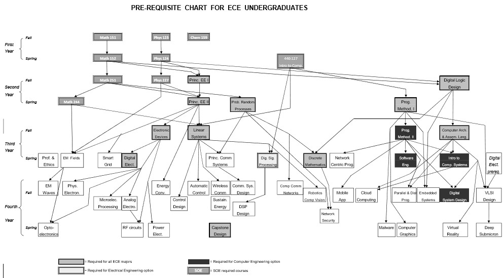

Department of Electrical and Computer Engineering
Rutgers, The State University of New Jersey . 94 Brett Road . Piscataway, NJ 08854-8058
(848) 445-3262 (848) 445-3127 . FAX: (732) 445-2820
Undergraduate Students Handbook
in
Electrical and Computer Engineering
This handbook can be found at
the ECE website
Undergraduate Director: Professor Hana Godrich
ECE Building-Room 122
Busch Campus
e-mail: godrich@soe.rutgers.edu
(848) 445-2606
(848) 445-3262 (ECE Department)
Last updated: May 2018
Handbook for Undergraduate Students
This handbook describes the details of the undergraduate program offered by the Department of Electrical
and Computer Engineering. Each student is responsible for every aspect of completing his/her degree
requirements. Al relevant information is contained in the attachments. Be sure to thoroughly read this
handbook, paying attention to al the degree requirements. Before registering for any course, a student must
have met the necessary prerequisites. Also, prior approval is required for any courses a student wishes to take
at another institution if those courses are intended to fulfil degree requirements. Please note that additional
advising material is available at SOE Dean's website http://soe.rutgers.edu/oaa.
The undergraduate program consists of two specific options: (1) Electrical Engineering option and (2)
Computer Engineering option. Both options lead to the same B.S. Degree in Electrical and Computer
Engineering (ECE). Details of the two curricula are provided shortly. It should be noted that the freshman
and sophomore years are common to both options. In either option a student takes several elective courses
in addition to the required courses. The four categories of elective courses are (1) Technical y oriented
electives, (2) Science Math and Engineering elective, (3) Humanities/Social Science electives and (4) General
elective.
1. Degree Title
Bachelor of Science (BS) in Electrical and Computer Engineering (BSECE)
1.1 Electrical and Computer Engineering Mission Statement
The mission of the ECE undergraduate program is to provide students with a broad and flexible
education in electrical and computer engineering, to prepare its graduates for rapidly changing
technological fields, and give them a sound basis for professional practice, advanced education,
active citizenship, and lifelong learning. The students are prepared to expand this knowledge
through research into new technologies, design methods, and analysis techniques that link the
knowledge with multi-disciplinary fields and advance the state of the art. With a knowledge of
contemporary technological issues and their impact global y, economical y, and environmental y,
electrical and computer engineers are at the forefront of advances that continual y transform
society.
1.2 Degree Requirements
A B.S. Degree in Electrical and Computer Engineering has the fol owing requirements:
Required Number of Degree Credits:
Both Electrical Engineering and Computer Engineering options require 123 credits for graduation. Under
certain circumstances, due to one reason or another, a student might be exempted from taking a required
course. If so, to satisfy the number of degree credits required, the student needs to take an additional
elective course in its place. Consult with the Undergraduate Director for guidance.
ECE Residency requirements: to satisfy the requirements for graduation a minimum number of
14:332:xxx credits must be taken. Students majoring in the Electrical Engineering option need to take 54
credits of 14:332:xxx and the Computer Engineering option need to take 50 credits of 14:332:xxx. Only
core courses and electrical and computer electives count towards residency requirement. Technical
2
electives do not count towards residency. Core courses are detailed in the Electrical and Computer
Engineering Curriculum detailed herein.
Required Number of Electives for the ECE major:
Electrical Engineering Option:
Electives consists of (1) four courses of electrical electives, (2) two courses of technical electives, (3) one
course of Science Math and Engineering elective, and (4) one course of a general elective.
Computer Engineering Option:
Electives consist of (1) two courses of computer electives, (2) one course of computer or technical elective,
(3) one course of technical elective, and (4) one course of Science Math and Engineering elective.
For al SOE majors, students must take 18cr of humanities/social science requirements, including 12cr of
electives: two courses of lower level Hum/Soc electives and two courses of upper level Hum/Soc electives.
Humanities/Social Science requirements are not a part of the ECE Residency requirement.
1.3 Program Educational Objectives
Consistent with the stated mission of the University, the mission of the electrical and computer engineering
program is to prepare its graduates for a rapidly changing technological field. The faculty of the department
of Electrical and Computer Engineering strives to educate and train the students in a technical y sound and
chal enging manner to achieve the fol owing educational objectives:
1. To prepare graduates to pursue professional careers or continue their education in graduate programs.
2. To ensure that graduates are proficient and competent in the fol owing electrical and computer
engineering areas: communications, computer engineering, computer signal and information
processing, systems and controls, and solid state electronics.
3. To produce graduates who wil pursue life-long learning and professional development.
1.4 Educational Outcomes
Rutgers ECE graduates should have attained:
(a) an ability to apply knowledge of mathematics, science, and engineering
(b) an ability to design and conduct experiments, as wel as to analyze and interpret data
(c) an ability to design a system, component, or process to meet desired needs within realistic constraints
such as economic, environmental, social, political, ethical, health and safety, manufacturability, and
sustainability
(d) an ability to function on multi-disciplinary teams
(e) an ability to identify, formulate, and solve electrical and computer engineering problems
(f) an understanding of professional and ethical responsibility
(g) an ability to communicate effectively
(h) the broad education necessary to understand the impact of electrical and computer engineering
solutions in a global, economic, environmental, and societal context
3
(i) a recognition of the need for, and an ability to engage in life-long learning
(j) a knowledge of contemporary issues
(k) an ability to use the techniques, skil s, and modern engineering tools necessary for electrical and
computer engineering practice.
1.5 The Relationship Between Educational Objectives and Outcomes
Relationship of student learning outcomes to program educational objectives. The outcomes
and objectives are noted by abbreviated descriptions.
Outcome
Objective 1
Objective 2
Objective 3
Expectations
Advance Study
Leadership
a - math/science
b - experiments
c - design
d - teams
e - problem solutions
f - ethics
g – communication
h - broad education
i - life-long learning
j - contemporary issues
k - engineering tools
Relationship between student outcomes (SOs) addressed in each required course in the
Electrical and Computer Engineering curricula. The level of support is marked by H (highly
supported) or S (supported). The ones who are being assessed for each outcome is highlighted
in yel ow1.
Course Name and Number
a
b
c
d
e
f
g
h
i
j
k
221 Principles of Electrical Engineering I
H
H
S
H
222 Principles of Electrical Engineering II
H
S
H
S
S
H
223 Principles of Electrical Engineering I
H
H
S
H
S
S
H
S
H
Laboratory
224 Principles of Electrical Engineering II
H
H
S
H
S
S
H
S
H
Laboratory
226 Probability and Random Processes
H
S
H
H
S
S
H
231 Digital Logic Design
H
H
S
H
S
S
S
H
233 Digital Logic Design Laboratory
H
H
H
H
H
S
H
S
H
1 Note: The H/S evaluation scoring that the ECE department uses can be equated with the 3-point scoring methods
used by others where H = 3, S=2.
4
252 Programming. Methodology I
H
H
S
S
H
254 Programming. Methodology I
H
H
S
S
S
S
S
H
Laboratory
312 Discrete Mathematics
H
H
S
S
331 Computer Architecture and Assembly
H
S
H
S
S
H
Language
333 Comp. Architecture Laboratory
H
H
S
H
S
S
H
345 Linear Systems and Signals
H
S
H
H
S
H
346 Digital Signal Processing
H
S
H
H
S
H
347 Linear Systems and Signals Laboratory
H
H
S
S
S
H
S
H
348 Digital Signal Processing Laboratory
H
S
S
H
S
S
H
351 Programming Methodology II
H
H
S
S
H
361 Electronic Devices
H
S
H
S
S
H
363 Electronic Devices Laboratory
H
H
S
S
S
S
H
S
H
366 Digital Electronics
H
S
H
S
S
H
368 Digital Electronics Lab
H
H
S
S
S
S
H
S
H
393 Professionalism/Ethics
H
S
S
S
434 Introduction to Computer Systems
H
H
S
H
437 Digital Systems Design
H
S
H
S
S
H
448 Capstone Design in ECE
H
H
H
H
H
H
H
H
H
S
H
452 Software Engineering
H
H
H
H
H
S
H
S
S
S
H
5
2. Combined Degree Options, Minors and Double Majors
2.1 BS/Master’s programs (http://soe.rutgers.edu/oas/BS-Masters):
Rutgers School of Engineering students are eligible to apply for admission to a variety of
accelerated Master's Programs. Admission to any of these programs typical y requires a
cumulative grade point average of at least 3.2 (note: some departments have different GPA
requirements) and junior year status. In some cases, an aptitude test such as the GRE or GMAT
is also required. These prestigious programs al ow students to complete a master's degree in
1-2 extra years while simultaneously integrating an undergraduate engineering experience
with that of a graduate program. With the higher demands of the work place in today's world,
the B.S./Master's programs ensure that students remain competitive by mastering new
techniques and extending their expertise within their subject area and/or in the related areas
of business.
There are currently three combined programs available with a B.S. in Engineering. See the
fol owing links for details:
BS-MBA (Master of Business Administration - Future Leaders MBA)
BS-MS/ME (Master of Science, or Master of Engineering): described in 2.5
BS-MBS (Master of Business and Science)
BS-MEd (Master of Education)
2.2 Minors, Double Majors, and Dual Degree (http://soe.rutgers.edu/oas/minors-majors ):
Minors, majors, and dual degrees provide students with the opportunity to broaden skil sets
outside of engineering. Often times you can choose your courses so that they can be ‘double-
counted’ – meaning that the courses wil count towards your minor (or major, or dual degree), and
count towards engineering. Many of the technical minors (math, computer science, life sciences,
etc.) can often count for both the minor and as part of the technical electives for the engineering
major. Many of the humanities/social science minors (history, psychology, language, economics,
etc.) can count for the minor and as the humanities requirements.
2.3 Minoring in CS:
Requirements for minoring in Computer Science (CS) may be found on the CS Department site at:
https://www.cs.rutgers.edu/undergraduate/minor-computer-science.
A suggested choice for Computer Option Students enabling a CS minor is as fol ows:
Students enrolled in the Computer Engineering Option: Take 198:111, 112, 213/214, and
three electives as either Computer electives or Tech electives or a combination of them.
These electives are to be taken among the courses listed as technical elective. Substitute
198:111, 112, 213/214 for ECE required courses 332:252, 254 and 351 (PM I & LAB and PM
II). You may take a CS course as Science Math Engineering elective.
Students should check with CS departmental advisor before finalizing their schedules.
6
Students enrolled in the Electrical Engineering Option: It is rather difficult to take a minor
in CS unless you are prepared to take six extra CS courses. Consult the UG Director.
Note that with any substitution of an ECE course: Electrical Engineering option students
need to take 54 credits of 14:332:xxx and Computer Engineering option students need to
take 50 credits of 14:332:xxx.
2.4 Double Majoring in Computer Science and Computer Engineering:
Consult CS Website for details. ECE requirements are the same whether you are a double
degree major or a single degree major. You have to check with CS department or their website
to know what is required to get a BS in CS. You could use some CS courses as electives for ECE.
You have to look at the elective list for computer option to find out what CS courses can be
used as electives for ECE. Also, look at the info under `Equivalent of Courses' as given above.
Note that with any substitution of an ECE course: Electrical Engineering option students
need to take 54 credits of 14:332:xxx and Computer Engineering option students need to
take 50 credits of 14:332:xxx.
Differences between Computer Science and Computer Engineering:
Computer science (CS) and computer engineering (CE) are related to each other but different
in their emphasis. When you think of a COMPUTER, two aspects of it are prominent, software
(Programming, programming languages, data structures, etc.) and hardware (architecture and
what goes in building it, the circuitry). CS deals with mostly software and hardware is only
tangential.
On the other hand, CE is the other way.
Let us take an analogy, say the automobile. To make use of an automobile, one real y does
not need to know how it works. Al that needs is the knowledge of how to drive it and with the
help of some gauges know whether it needs GAS or OIL, and also be familiar with some
warning signs for service and repair. However, knowing something about how an automobile
works wil enhance the use of it.
On the other hand, an engineer designing an automobile must deal with its architecture both
functional y as wel as appearance wise. This involves physical hardware design and
construction.
Now let us take the Computer instead of an automobile. Computer Science (CS) is mainly
interested in using the computer as a tool just like a driver is interested in using an
automobile. Thus the curriculum in CS concentrates on the languages needed to communicate
with a computer. In other words, software is emphasized although computer architecture and
other aspects of hardware are briefly reviewed.
Computer Engineering (CE) emphasizes the architecture, and the physical design of circuitry to
make it work. However, some aspects of software are also discussed but not to the same
extent as Computer Science does.
7
2.5 BS-MS Program:
The admission Process for combined BS/MS Degrees is described below.
1. ECE undergraduate students in a good academic standing with the GPA of 3.2 and above
are eligible for admission in to the ECE graduate program.
2. The interested student needs to submit the regular New Brunswick Graduate School
application at the beginning of the fal semester of senior year to the ECE Graduate
Director together with three letters of recommendation. The GRE requirement wil be
waived.
3. Students must complete the number of credits required for the ECE BS degree before
starting the M.S. graduate program. The requirements for the MS degree are identical to
the requirements in effect for regular ECE MS students:
(a) 24 credits plus the master thesis or
(b) 30 credits plus the master technical paper and its public presentation.
Please note that double counting of credits for both degrees is presently not al owed. Also,
this is not a joint BS/MS 5-year program. Such a program wil need the approval from the
State.
8
3 ECE Program Courses Information
The fol owing tables detail the core and elective courses requirements for the electrical engineering
and computer engineering options:
3.1 Electrical Engineering Curriculum:
Freshman Year
01:160:159 General Chemistry for
3
14:440:127 Intro to Computers for
3
Engineers
Engineers
01:160:171 Introduction to
1
14:440:221 Engineering Mechanics
3
Experimentation
01:355:101 Expository Writing
3
01:640:152 Calculus II
4
14:440:100 Engineering Orientation
1
01:750:124 Analytical Physics IB
2
01:640:151 Calculus I Math/Physics
4
__:___:___ Hum/Soc elective
3
01:750:123 Analytical Physics IA
2
__:___:___ Hum/Soc elective
3
Total Credits
17 Total Credits
15
Sophomore Year
14:332:221 Principles of Elec. Eng. I
M
3
14:332:222 Principles of Elec. Eng. II
M
3
14:332:223 Principles of EE I Lab
M
1
14:332:224 Principles of EE II Lab
M
1
14:332:231 Digital Logic Design
M
3
14:332:226 Probability & Random Proc. M
3
14:332:233 Digital Logic Design Lab
M
1
14:332:252 Programming Method. I
M
3
01:640:251 Multivariable Calculus
4
14:332:254 Programming Method. I.
M
1
Lab
01:750:227 Analytical Physics IIA
3
01:640:244 Differential Equations
4
01:750:229 Analytical Physics II Lab
1
Total Credits
16 Total Credits
15
Junior Year
14:332:331 Computer Arch.& Asmb.
M
3
14:332:312 Discrete Mathematics
M
3
Lang.
14:332:333 Computer Arch. Lab
M
1
14:332:346 Digital Signal Processing
M
3
14:332:345 Linear Systems & Signals
M
3
14:332:348 Digital Signal Proc. Lab
M
1
14:332:347 Linear Sys. & Signals Lab
M
1
14:332:393 Professionalism/Ethics
M
1
14:332:361 Electronic Devices
M
3
14:332:366 Digital Electronics
M
3
14:332:363 Electronic Devices Lab
M
1
14:332:368 Digital Electronics Lab
M
1
__:___:___ Hum/Soc elective (200+)
3
14:332:___ Electrical elective
M
3
__:___:___ Technical elective
M
3
Total Credits
15 Total Credits
18
Senior Year
14:332:___ Electrical elective
M
3
14:332:448 C apstone Design elective
M
3
14:332:___ E lectrical elective
M
3
14:332:___ Electrical elective
M
3
__:___:___ Science Math Eng elective M
3
__:___:___ General elective
3
__:___:___ Technical elective
M
3
01:220:102 Microeconomics
3
__:___:___ Hum/Soc elective (200+)
3
Total Credits
15
Total Credits
12
Total degree credits: 123
9
Electives consists of (1) four courses of electrical electives, (2) two courses of Technical electives, (3)
one course of Science Math Eng'g elective, (4) two courses of lower level Hum/Soc electives, (5) two
courses of upper level Hum/Sci electives denoted by * (not al four humanity electives can be in the
same subject), and (6) one course of general elective. For more info on humanity electives, see
http://soe.rutgers.edu/oaa/electives.
Electives consists of (1) four courses of electrical electives, (2) two courses of Technical electives, (3)
one course of Science Math Eng'g elective, (4) two courses of lower level Hum/Soc electives, (5) two
courses of upper level Hum/Sci electives denoted by * (not al four humanity electives can be in the
same subject), and (6) one course of general elective. For more info on humanity electives, see
http://soe.rutgers.edu/oaa/electives.
Most ECE courses are offered only once a year in the indicated semesters. Odd numbered ECE
courses are offered in Fal and even numbered in Spring (some exceptions may happen, e.g., 466,
472 are offered in Fal ). The order of the electives as indicated in bold is just a suggestion. They can
be reordered as necessary. Beware that a viable capstone design project is a must.
Independent study courses 14:332:491 and 14:332:492: up to six credits are acceptable. These
credits can count for either electrical/computer electives or as technical electives.
Co-op and internship courses 14:332:496 and 14:332:497: up to six (6) credits are acceptable. These
courses count as technical electives only.
A maximum of nine (9) credits is acceptable with 14:332:491, 14:332:492, 14:332:496 and
14:332:497 courses.
10
3.2 Computer Engineering Curriculum:
Freshman Year
01:160:159 General Chemistry for
3
14:440:127 Intro to Computers for
3
Engineers
Engineers
01:160:171 Introduction to
1
14:440:221 Engineering Mechanics
3
Experimentation
01:355:101 Expository Writing
3
01:640:152 Calculus II
4
14:440:100 Engineering Orientation
1
01:750:124 Analytical Physics IB
2
01:640:151 Calculus I Math/Physics
4
__:___:___ Hum/Soc elective
3
01:750:123 Analytical Physics IA
2
__:___:___ Hum/Soc elective
3
Total Credits
17 Total Credits
15
Sophomore Year
14:332:221 Principles of Elec. Eng. I
M
3
14:332:222 Principles of Elec. Eng. II
M
3
14:332:223 Principles of EE I Lab
M
1
14:332:224 Principles of EE II Lab
M
1
14:332:231 Digital Logic Design
M
3
14:332:226 Probability & Random Proc. M
3
14:332:233 Digital Logic Design Lab
M
1
14:332:252 Programming Method. I
M
3
01:640:251 Multivariable Calculus
4
14:332:254 Programming Method. I.
M
1
Lab
01:750:227 Analytical Physics IIA
3
01:640:244 Differential Equations
4
01:750:229 Analytical Physics II Lab
1
Total Credits
16 Total Credits
15
Junior Year
14:332:331 Computer Arch.& Asmb.
M
3
14:332:312 Discrete Mathematics
M
3
Lang.
14:332:333 Computer Arch. Lab
M
1
14:332:452 Software Engineering
M
3
14:332:345 Linear Systems & Signals
M
3
14:332:434 Intro to Comp. Systems
M
3
14:332:347 Linear Sys. & Signals Lab
M
1
14:332:393 Professionalism/Ethics
M
1
14:332:361 Electronic Devices
M
3
14:332:366 Digital Electronics
M
3
14:332:363 Electronic Devices Lab
M
1
14:332:368 Digital Electronics Lab
M
1
14:332:351 Programming Method. II
M
3
__:___:___ Comp/Technical elective
M
3
Total Credits
15 Total Credits
17
Senior Year
14:332:437 Digital System Design
M
3
14:332:448 C apstone Design elective
M
3
__:___:___ Computer elective
M
3
__:___:___ Computer elective
M
3
__:___:___ Science Math Eng elective M
3
__:___:___ Hum/Soc elective (200+)
3
__:___:___ Technical elective
M
3
01:220:102 Microeconomics
3
__:___:___ Hum/Soc elective (200+)
3
Total Credits
15
Total Credits
12
Total degree credits: 122
Electives consists of (1) two courses of computer electives, (2) one course of technical elective, (3)
one course of either computer or technical elective, (4) one course of Science Math and Engineering
elective, (5) two lower level Hum/Soc electives, and (6) two upper level Hum/Soc electives denoted
by * (not al four humanity electives can be in the same subject). For more info on humanity
electives, see http://soe.rutgers.edu/oaa/electives
The ECE courses are offered only once a year in the indicated semesters. Odd numbered ECE
courses are offered in Fal and even numbered in Spring (some exceptions may happen, e.g., 466
11
and 472 are offered in Fal ). The order of the electives as indicated in bold is just a suggestion. They
can be reordered as necessary. Beware that a viable capstone design project is a must.
Independent study courses 14:332:491 and 14:332:492: up to six credits are acceptable. These
credits can count for either electrical/computer electives or as technical electives.
Co-op and internship courses 14:332:496 and 14:332:497: up to six (6) credits are acceptable. These
courses count as technical electives only.
A maximum of nine (9) credits is acceptable with 14:332:491, 14:332:492, 14:332:496 and
14:332:497 courses.
3.3 General guidelines on electives:
3.3.1 Science Math and Engineering Elective: any 3 Cr or 4 Cr course at 200 level or higher in any area
of Science, or Mathematics, or Engineering. Although students are free to select this elective, they
are encouraged to take a course that wil later serve as a prerequisite for more advanced courses
that would be of interest. There are several required courses in Math and Science. Any course
lower level to the required courses is not al owed as a Science Math and Engineering Elective.
Also, if a course qualifies as a Humanities course, it is not al owed as a Science Math and
Engineering Elective. A list of electives is given later
3.3.2 Independent Study/Special Problems option: The Department of Electrical and Computer
Engineering al ows a student to earn six academic credits for research through courses
14:332:491 and 14:332:492. Credits can count as either electrical/computer electives or technical
electives, provided permission has been granted by a faculty supervisor and the Undergraduate
Director. Note that Independent Study/Special Problems courses are not open to students on
academic probation. A maximum of 3 credits of Independent Study/Special Problems may be
taken in any one semester. Independent Study/Special Problems xxx:491 and xxx:492, where
“xxx” is a departmental code other than 332, are not considered as electives unless they have
been approved prior to the start of classes by the Undergraduate Director. Again, a maximum of
6 such credits may be counted toward the B.S. degree and a maximum of 3 credits may be taken
in any one semester.
A one-page proposal of the technical work along with its title and an application form (found on
ECE website) properly fil ed must be submitted to the Undergraduate Director to enrol in this
course. Students who are on academic probation are not qualified to enrol in this course. A
technical report and poster describing in detail the study undertaken must be submitted to the
Undergraduate Director at the end of the study.
A maximum of nine (9) credits are acceptable with 14:332:491, 14:332:492, 14:332:496 and
14:332:497 courses.
3.3.3 Co-Op/Internship option: The Department of Electrical and Computer Engineering al ows a
student to earn six academic credits on a Pass/No credit basis.
Upon successful completion, six credits can be used as technical elective.
An option for a three months Co-Op is also available for either fal or spring semester. In such
case, three credits are earned that wil count for a technical elective.
Students who plan to enrol in a Co-Op Internship should review the guidelines specified under
the course heading 14:332:496/497 Co-Op Internship in Electrical and Computer Engineering. The
student should contact the Career Services Center at Rutgers to review listings of participating
12
organizations/companies for possible interest. Contact the Co-Op Student Services Administrator,
Career Services-Employment Center, Busch Campus Center.
Eligible student should not be on academic probation and have completed a minimum of 90
credits (40 credits in the major) with a cumulative grade point average of 2.5 or better.
Co-op must at least be of six months of continuous duration, ful time for six credits or at least
three months for three credits. Normal y, it is to be taken in the summer/fal semesters or
spring/summer semesters. The Internship should continue with the same employer during both
semesters. A three months Co-Op during either fal or spring semester wil count towards three
credit technical elective. The Co-Op credit wil not be given for summer employment alone. In
order to earn credit, the student must be working on a specified and approved project. A one-
page description of the project and an application form appropriately fil ed must be submitted
for approval to the Undergraduate Director. Additional y, the student must have a faculty advisor
as wel as an industrial advisor who wil supervise the student. At the end of the project, a
technical report must be written, and a copy of it must be submitted to the Undergraduate
Director as wel as to the industrial advisor who together decide whether the student is to receive
a passing grade or not.
A maximum of nine (9) credits are acceptable with 14:332:491, 14:332:492, 14:332:496 and
14:332:497 courses.
3.3.4 Humanities/Social Science Requirements: al SOE majors must take a total of 18cr of
humanities/social science courses. For a description and list of acceptable humanities/social
science requirements, please refer to the website: http://soe.rutgers.edu/oas/electives.
The courses 01:355:101 Expository Writing and 01:220:102 Introduction to Microeconomics are
required courses that are a part of the humanities/social science requirements.
Additional advising information is available at http://soe.rutgers.edu/oas.
The course 14:332:301 Forces and Strategies That Shaped the Wireless Revolution counts as an
upper level Hum/Soc elective for SOE majors. It is neither a department elective, nor a technical
elective, nor MSE elective, nor a part of the ECE residency requirement.
3.3.5 General Electives: Almost any course taught for credit at Rutgers qualifies as a general elective,
including technical y oriented electives and humanities/social science electives. There are,
however, a few exceptions. Such exceptions include remedial courses and courses related to
athletics and sports. For more information, see http://soe.rutgers.edu/oas/electives. Although
students are free to select this elective, they are encouraged to take an ECE course that wil later
serve as a prerequisite for more advanced ECE courses that would be of interest.
13
3.4 List of Electives for the Electrical Engineering Option
Guideline for electives selection for Electrical Engineering option:
3.3.1 FOUR Electrical Electives are to be selected from list 3.4.1.
3.3.2 Any TWO Technical Electives are to be selected from list 3.4.2.
3.3.3 One Science Math and Engineering elective (any Science, Math, or Engineering course
above 200 level)
3.3.4 One general elective (any course 200 level and above)
3.3.5 Each 4-credit Computer Science (Livingston Col ege) course constitutes one elective
course.
3.3.6 Students with a cumulative average of 3.2 or better may take a graduate level course as a
Technical or Electrical Elective with the approval of their advisor, instructor of the course,
and the Dean’s office.
LIST 3.4.1: ELECTRICAL ELECTIVES
14:332:322
Principles of Communication Systems
14:332:351
Programming Methodology II (The course198:213 or 198:214 can be taken in
place of 332:351)
14:332:376
Virtual Reality (14:332:378 is a corequisite)
14:332:382
Electromagnetic Fields
14:332:402
Sustainable Energy: Choosing among options
14:332:411
Electrical Energy Conversion
14:332:415
Introduction to Automatic Control Theory
14:332:417
Introduction to Control System Design
14:332:421
Wireless Communication Systems
14:332:423
Computer and Communication Networks
14:332:424
Introduction to Information and Network Security
14:332:427
Communication System Design
14:332:434
Introduction to Computer Systems
14:332:435
Topics in Electrical and Computer Engineering
14:332:436
Topics in Electrical and Computer Engineering
14:332:437
Digital System Design
14:332:445
Topics in Electrical and Computer Engineering
14:332:446
Topics in Electrical and Computer Engineering
14:332:447
Digital Signal Processing Design
14:332:451
Introduction to Paral el and Distributed Programming
14:332:452
Software Engineering
14:332:453
Mobile App Engineering and User Experience
14:332:456
Network-Centric Programming (Usual y offered only in alternate years)
14:332:460
Power Electronics
14:332:463
Analog Electronics
14:332:464
RF Integrated Circuits
14:332:465
Physical Electronics
14:332:466
Opto-Electronic Devices
14:332:467
Microelectronic Processing
14:332:472
Robotics and Computer Vision
14:332:474
Introduction to Computer Graphics (The course 198:428 can be taken in place)
14:332:479
VLSI Design
14:332:481
Electromagnetic Waves
14:332:482
Deep Submicron VLSI Design for Electrical and Computer Engineering
14:332:493
Topics in Electrical and Computer Engineering
14:332:494
Topics in Electrical and Computer Engineering
14
14:332:491/2 Special Problems/Independent Study (not open to students on academic
probation)
LIST 3.4.2: TECHNICAL ELECTIVES
14:xxx: (where “xxx” is a departmental code): SOE 200+ level courses from other departments are
accepted as technical electives;
14:332:491/2 Special Problems/Independent Study (not open to students on academic
probation)
14:332:496/7 Co-Op and Internship (not open to students on academic probation)
01:198:314
Principles of Programming Languages
01:198:323*
Numerical Analysis and Computing
01:198:334
Introduction to Imaging and Multimedia
01:198:336
Principles of Information and Data Management
01:198:344
Design and Analysis of Computer Algorithms
01:198:417
Distributed Systems: Concepts and Design
01:198:424
Modeling and Simulation of Continuous Systems
01:198:440 Introduction to Artificial Intel igence
01:198:442 Topics in Computer Science
01:198:443 Topics in Computer Science
01:198:444
Topics in Computer Science
01:198:445 Topics in Computer Science
01:198:440 Introduction to Artificial Intel igence
01:198:452
Formal Languages and Automata
01:640:250
Introductory Linear Algebra
01:640:311
Advanced Calculus I
01:640:312
Advanced Calculus II (640:421 Advanced Calculus for Engineers is not acceptable
as this duplicate 332:345 Linear Systems and Signals)
01:640:350
Linear Algebra
01:640:351
Introduction to Abstract Algebra I
01:640:352
Introduction to Abstract Algebra II
01:640:354
Linear Optimization
01:640:357
Topics in Applied Algebra
01:640:373*
Numerical Analysis I
01:640:374*
Numerical Analysis II
01:640:403
Introduction to Theory of Functions of a Complex Variable
01:640:423
Elementary Partial Differential Equations (01:640:421 is not acceptable)
01:640:424
Stochastic Models in Operations Research
01:640:428
Graph Theory
01:640:454
Combinatorics
01:640:478
Mathematical Theory of Probability II
01:750:313
Modern Physics I
01:750:314
Modern Physics II
01:750:351** Thermal Physics I
15
01:750:352
Thermal Physics II
01:750:406
Introductory Solid State Physics
01:750:417
Intermediate Quantum Mechanics
01:750:421
Fluid and Plasma Phenomena
01:750:464
Mathematical Physics
01:960:463
Regression Methods
01:960:467
Applied Multivariate Analysis
01:960:484
Basic Applied Statistics
01:160:307
Organic Chemistry I
01:160:308
Organic Chemistry II
01:160:316
Honors Organic Chemistry I
Independent Study or Special Problems xxx:491, xxx:492, other than 332, are not, in general,
considered as electives.
NOTEs:
* Credit not given for both 01:198:323-324 and 01:640:373-374
** Credit not given for both 01:750:351 and 14:650:351
*** Credit will not be given to 01:198:416
3.5 List of Electives for the Computer Engineering Option
Guideline for electives selection for Computer Engineering option:
3.4.1 TWO Computer Electives are to be selected from list 3.5.1.
3.4.2 Any One Elective is to be selected from either list 3.5.1 or list 3.5.2.
3.4.3 Any One Elective is to be selected from list 3.5.2.
3.4.4 One Science Math and Engineering elective (any Science, Math, or Engineering course
above 200 level)
3.4.5 Each 4-credit Computer Science (Livingston Col ege) course constitutes one elective
course.
3.4.6 Students with a cumulative average of 3.2 or better may take a graduate level course as a
Technical or Computer Elective with the approval of their advisor, instructor of the
course, and the Dean’s office.
LIST 3.5.1: COMPUTER ELECTIVES
14:332:322
Principles of Communication Systems
14:332:346
Digital Signal Processing
14:332:376
Virtual Reality (14:332:378 is a co-requisite)
14:332:402
Sustainable Energy: choosing among options
14:332:415
Introduction to Automatic Control Theory (This course is not offered often)
14:332:421
Wireless Communication Systems (14:332:322 is a prerequisite)
14:332:423
Computer and Communication Networks
14:332:424
Introduction to Information and Network Security
14:332:447
Introduction to Digital Signal Processing Design
14:332:451
Introduction to Paral el and Distributed Programming
14:332:453
Mobile App Engineering and User Experience
14:332:456
Network-Centric Programming (usual y offered only in alternate years)
14:332:472
Robotics and Computer Vision
14:332:474
Intro to Computer Graphics (The course198:428 can be taken in place)
16
14:332:479
VLSI Design
14:332:482
Deep Submicron VLSI Design for Electrical and Computer Engineering
14:332:491/2 Special Problems/Independent Study (not open to students on academic
probation)
14:332:493
Topics in Electrical and Computer Engineering (if topic is computer related)
14:332:494
Topics in Electrical and Computer Engineering (if topic is computer related)
01:198:334
Introduction to Imaging and Multimedia
01:198:336
Principles of Information and Data Management
01:198:344
Design and Analysis of Computer Algorithms
01:198:440 Introduction to Artificial Intel igence
LIST 3.5.2: TECHNICAL ELECTIVES
14:xxx: (where “xxx” is a departmental code): SOE 200+ level courses from other departments are
accepted as technical electives;
14:332:382
Electromagnetic Fields
14:332:463
Analog Electronics
14:332:465
Physical Electronics
14:332:466
Opto-Electronic Devices
14:332:481
Electromagnetic Waves
14:332:491/2 Special Problems/Independent Study (not open to students on academic
probation)
14:332:496/7 Co-Op and Internship (not open to students on academic probation)
01:640:250
Introductory Linear Algebra
01:640:311
Advanced Calculus I
01:640:312
Advanced Calculus II (640:421 Advanced Calculus for Engineers is not acceptable
as this duplicate 332:345 Linear Systems and Signals)
01:640:350
Linear Algebra
01:640:351
Introduction to Abstract Algebra I
01:640:352
Introduction to Abstract Algebra II
01:640:354
Linear Optimization
01:640:357
Topics in Applied Algebra
01:640:373
Numerical Analysis I
01:640:374
Numerical Analysis II
01:640:403
Introduction to Theory of Functions of a Complex Variable
01:640:423
Elementary Partial Differential Equations (01:640:421 is not acceptable)
01:640:424
Stochastic Models in Operations Research
01:640:428
Graph Theory
01:640:454
Combinatorics
01:640:478
Mathematical Theory of Probability II
01:750:313
Modern Physics I
01:750:314
Modern Physics II
01:750:351** Thermal Physics I
01:750:352
Thermal Physics II
01:750:406
Introductory Solid-State Physics
01:750:417
Intermediate Quantum Mechanics
17
01:750:421
Fluid and Plasma Phenomena
01:750:464
Mathematical Physics
01:960:463
Regression Methods
01:960:467
Applied Multivariate Analysis
01:960:484
Basic Applied Statistics
01:160:307
Organic Chemistry I
01:160:308
Organic Chemistry II
01:160:316
Honors Organic Chemistry I
01:198:323*
Numerical Analysis and Computing
01:198:417
Distributed Systems: Concepts and Design
01:198:424
Modeling and Simulation of Continuous Systems
01:198:476
Advanced Web Applications: Design and Implementation
Independent Study or Special Problems xxx:491, xxx:492, other than 332, are not, in general,
considered as electives.
NOTEs:
* Credit not given for both 01:198:323-324 and 01:640:373-374
** Credit not given for both 01:750:351 and 14:650:351
*** Credit will not be given to 01:198:416
18
3.6 List of Science, Math, and Engineering Electives
Science Math and Engineering Elective is any 3 Cr or 4 Cr course at 200 level or higher in any area
of Science, or Mathematics, or Engineering. Although students are free to select this elective, they
are encouraged to take a course that wil later serve as a prerequisite for more advanced courses
that would be of interest. There are several required courses in Math and Science. Any course lower
level to the required courses is not al owed as a Science Math and Engineering Elective. Also, if a
course qualifies as a Humanities course, it is not al owed as a Science Math and Engineering Elective.
The fol owing is a list of courses where `x' represents any digit:
Departments/School
Courses
Accounting
33:010:2xx, 3xx, 4xx
Anthropology
01:070:2xx, 3xx, 4xx
Biological Sciences
01:115:2xx, 3xx, 4xx
01:119:2xx, 3xx, 4xx
01:126:2xx, 3xx, 4xx
01:146:2xx, 3xx, 4xx
01:694:2xx, 3xx, 4xx
Biotechnology
11:126: 2xx, 3xx, 4xx
Chemistry
01:160:2xx, 3xx, 4xx
Computer Science
01:198:2xx, 3xx, 4xx
Engineering (SOE)
14:xxx:2xx, 3xx, 4xx (Exception: 14:332:301 which counts as
humanities)
Environmental Science
11:375:2xx, 3xx, 4xx
Food Science
11:400:2xx, 3xx, 4xx
Geography
01:4502xx, 3xx, 4xx
Geological Sciences
01:460:2xx, 3xx, 4xx
Genetics
01:447:2xx, 3xx, 4xx
Food Science
01:400:2xx, 3xx, 4xx
Marine Sciences
01:628:2xx, 3xx, 4xx
Mathematics
01:640:2xx, 3xx, 4xx
Physics
01:750:2xx, 3xx, 4xx
Science, Technology,
01:880: 2xx, 3xx, 4xx
and Society:
Statistics
01:960:2xx, 3xx, 4xx
19
3.7 Courses Substitutions and Equivalence
Course Substitutions: Absolutely no substitutions are al owed for any required core courses. With
permission of the Undergraduate Director, a student who fails a required course at Rutgers may
take an equivalent course at another institution. For electives, a student can substitute equivalent
courses from another institution with prior permission of the Undergraduate Director.
Equivalency of CS and ECE Courses: Regarding basic programming courses, one needs to fol ow
either ECE course sequence (332:252, 254, 351) or CS course sequence (198:111, 112, 213 or 214)
as a group.
Some important notes:
198:111 is based on Java while 332:252 (PM I) and its lab 254 are based on C++. The
course 332:351 (PM II) introduces Java.
Let us also emphasize that 198:111, 112 at Rutgers Camden are not equivalent to 198:111,
112 at New Brunswick; they are entirely different courses. The same applies to Rutgers
Newark 198:101 and 198:102.
Students who take the sequence 111, 112, and 213 (or 214) know more Java and less C
(and related languages). On the other hand, students who take the sequence 252, 254,
and 351 know more C++ and less Java. A student who successful y completes the three CS
courses 198:111, 198:112, and 198:213 (or 198:214) is given credit for the courses
332:252, 332:254, and 332:351.
A student who successful y completes only CS 111 should not proceed to take ECE 351
(PM II), he/she must take 198:111 and 198:112 before taking either 198:213/214 or
332:351. Then, he/she as mentioned above wil get credit for 252, 254, and 351.
Important: there is a residency requirement for ECE graduation and the CS courses wil not
count towards these 332:xxx credits requirements.
The following equivalences apply:
332:252 (Programming Methodology I): 198:112 (Data Structures)
332:254 (Programming Methodology I Lab): 198:111 (Introduction to Computer Science)
332:351 (Programming Methodology II): 198:213 (Software Methodology) or 198:214
(Systems Programming)
14:332:312 (Discrete Mathematics): 01:198:205 (Introduction to Discrete Structures I) or
01:640:300 (Introduction to Mathematical Reasoning)
14:332:226 (Probability & Random Processes): 01:198:206 (Introduction to Discrete
Structures II) or 01:640:477 (Mathematical Theory of Probability)
14:332:331 (Computer Architecture and Assembly Language): 01:198:211 (Computer
Architecture). Those who take 01:198:211 must stil take the lab 14:332:333
20

3.8 Courses Prerequisite Chart
OFFERED
Course #
Course name
Prerequisite
Co-requisite
Fal ;
14:332:221 Principles of Electrical
(01:640:152 or 01:640:154 or
14:332:223
Spring
Engineering 1
01:640:192) and (01:750:124 or
01:750:116 or 01:750:201 or
01:750:203 or 01:750:271)
Spring;
14:332:222 Principles of Electrical
14:332:221 and 14:332:223 and 14:332:224
Summer
Engineering 2
(01:640:251 or 01:640:291) and
(01:750:227) and (01:750:229)
Fal ;
14:332:223 Principles of Electrical
(01:640:152 or 01:640:154 or
14:332:221
Spring
Engineering 1 Laboratory
01:640:192) and (01:750:124 or
01:750:116 or 01:750:201 or
01:750:203 or 01:750:271)
Spring;
14:332:224 Principles of Electrical
14:332:221 and 14:332:223 and 14:332:223
Summer
Engineering 2 Laboratory
(01:640:251 or 01:640:291) and
(01:750:227) and (01:750:229)
spring;
14:332:226 Probability and Random
14:332:221 and (01:640:251 or
N/A
summer
Processes
01:640:291)
Fal ;
14:332:231 Digital Logic Design
(14:440:127 or 01:198:111) and 14:332:233
(01:640:152 or 01:640:154 or
Summer
01:640:192) and (01:750:124 or
01:750:116 or 01:750:201 or
01:750:203 or 01:750:271)
21
Fal ;
14:332:233 Digital Logic Design
(14:440:127 or 01:198:111) and 14:332:231
Summer
Laboratory
(01:640:152 or 01:640:154 or
01:640:192) and (01:750:124
or 01:750:116 or 01:750:201 or
01:750:203 or 01:750:271)
Spring
14:332:252 Programming Methodology
14:440:127
14:332:254
I
Spring
14:332:254 Programming Methodology I 14:440:127
14:332:252
Laboratory
Fal
14:332:301 Forces and Strategies that
Junior standing
Shaped the Wireless
Revolution
Spring
14:332:312 Discrete Mathematics
14:332:226 and 14:332:231
Spring
14:332:322 Principles of
14:332:226 and 14:332:345
Communications Systems
Fal ;
14:332:331 Computer Architecture and
14:332:231 and 14:332:233
14:332:333
Spring;
Assembly Language
Summer
Fal ;
14:332:333 Computer Architecture
14:332:231 and 14:332:233
14:332:331
Spring;
Laboratory
Summer
Fal ;
14:332:345 Linear Systems and Signals
14:332:222 and 14:332:224 and 14:332:347
Summer
(01:640:244 or 01:640:252 or
01:640:292) and 14:440:127
Spring
14:332:346 Digital Signal Processing
14:332:345 and 14:440:127
14:332:348
Fal ;
14:332:347 Linear Systems and Signals
14:332:222 and 14:332:224 and 14:332:345
Summer
Laboratory
(01:640:244 or 01:640:252 or
01:640:292) and 14:440:127
Spring
14:332:348 Digital Signal Processing
14:332:345 and 14:440:127
14:332:346
Laboratory
Fal
14:332:351 Programming Methodology
14:332:252 and 14:332:254
II
Fal
14:332:361 Electronic Devices
14:332:222 and 14:332:224
14:332:363
Fal
14:332:363 Electronic Devices
14:332:222 and14:332:224
14:332:361
Laboratory
Fal ;
14:332:366 Digital Electronics
14:332:361 and 14:332:363
14:332:368
Spring
Fal ;
14:332:368 Digital Electronics
14:332:361 and 14:332:363
14:332:366
Spring
Laboratory
22
Fal ;
14:332:373 Elements of Electrical
(01:640:251 or 01:640:291) and 01:640:244 and
Spring
Engineering
(01:750:227) ; Not open to
14:332:375
electrical engineering students
Fal ;
14:332:375 Elements of Electrical
Not open to electrical
14:332:373
Spring
Engineering Laboratory
engineering students
Spring
14:332:376 Virtual Reality
14:332:331
14:332:378
Spring
14:332:378 Virtual Reality Laboratory
14:332:331
14:332:376
Spring
14:332:382 Electromagnetic Fields
(01:640:152 or 01:640:154 or
01:640:192) and 01:750:227,
and 14:332:222
Spring
14:332:393 Professionalism/Ethics
Junior standing
Fal
14:332:402 Sustainable Energy:
Junior standing
Choosing among Options
Fal
14:332:411 Electrical Energy Conversion
14:332:222 or 50:750:234
14:332:415 Introduction to Automatic
14:332:345
Control Theory
Fal
14:332:417 Control Systems Design
14:332:345
Fal
14:332:421 Wireless Communications
14:332:345
Fal
14:332:423 Computer and
(14:332:226 or 01:198:206 or
Communication Networks
01:640:477)
Fal ;
14:332:424 Introduction to Information 14:332:226 and 14:332:312
Spring
and Network Security
Fal
14:332:427 Communication Systems
14:332:322
Design
Spring
14:332:434 Introduction to Computer
14:332:331 and 14:332:351
Systems
Fal ;
14:332:435 Topics in ECE
Spring
Fal ;
14:332:436 Topics in ECE
Spring
fal
14:332:437 Digital Systems Design
14:332:351 and 14:332:331
Fal ;
14:332:445 Topics in ECE
Spring
Fal ;
14:332:446 Topics in ECE
Spring
23
Fal
14:332:447 Digital Signal Processing
14:332:346
Design
Spring
14:332:448 Capstone Design in ECE
Senior standing
Fal
14:332:451 Introduction to Paral el and
14:332:351 and 14:332:331
Distributed Programming
Spring
14:332:452 Software Engineering
14:332:351
Fal
14:332:453 Mobile App Engineering and
14:332:351
User Experience
Spring
14:332:456 Network Centric
14:332:351
Programming
Spring
14:332:460 Power Electronics
14:332:361
Fal
14:332:461 Pulse Circuits
14:332:366
Fal
14:332:463 Analog Electronics
14:332:361
Spring
14:332:464 RF Integrated Circuit Design
14:332:361 and 14:332:463
Fal
14:332:465 Physical Electronics
14:332:361
Spring
14:332:466 Optoelectronic Devices
14:332:361 and 14:332:382
Fal
14:332:467 Microelectronic Processing
14:332:361
Fal
14:332:472 Robotics and Computer
14:332:345 and 14:332:346
Vision
14:332:474 Introduction to Computer
14:332:252
Graphics
Fal
14:332:479 VLSI Design
14:332:331 and 14:332:252 and
14:332:366
Fal
14:332:481 Electromagnetic Waves
14:332:382
Fal
14:332:491 Special Problems:
Permission of department
Independent Study
Spring
14:332:492 Special Problems:
Permission of department
Independent Study
Fal ;
14:332:493 Topics in Electrical and
Spring
Computer Engineering
Fal ;
14:332:494 Topics in Electrical and
Spring
Computer Engineering
Spring
14:332:496 Co-op Internship in Electrical Permission of department.
and Computer Engineering
Graded Pass/No Credit
24
Fal
14:332:497 Co-op Internship in Electrical Permission of department.
and Computer Engineering
Graded Pass/No Credit
3.9 Capstone Design Course
Capstone design program, or engineering design projects, mark an important mil stone in the
ECE undergraduate students education. Senior year students engage in a one-semester long
design project held in the spring semester. Teams of three to four students work on real-life
problems, focused on putting fundamental knowledge accumulated along the years with
know-hows of engineering. Students get an opportunity to develop an engineering project
from idea inception to a ful y operational product. A faculty adviser, at times in col aboration
with an industry adviser or other representatives from other departments, works with the
students on design and implementation of cutting-edge technology and research.
The program starts in the fal semester through a series of open sessions that cover the
fol owing:
1. Information orientation session: setting up program timeline for the fal including
teaming up, choosing a project, finding an adviser and submitting proposal. Previous years
projects are reviewed and guidelines for the spring preparations are shared.
2. Project management workshop: fast-track workshop on projects management based on
the SMART (Specific, Measurable, Achievable, Relevant and Timely) way has been added
to the curricula along with an introduction to the use of project management tools.
Students are guided on defining an appropriate scope of work (SOW), writing a proposal,
and choosing the appropriate topic and team members for the project.
3. Networking sessions: faculty and industry panels are being organized to introduce
potential advisers to the students and enable them to brainstorm on their ideas with
professionals from the academia and industry:
a. Faculty panels: Two one-hour sessions are held in September and October. Faculty
introduce themselves to students and talk about their research background, past
capstone projects they advised on, and topics they are interested to work on.
b. Capstone Kickoff event: this industry/faculty networking events includes professionals
from diverse industries. It served as a great opportunity for professionals from diverse
industries to meet with senior students and learn about their design projects and offer
expert advice
By December of the fal semester al students team-up, submit a project proposal, have an
adviser and are registered to one of the Capstone Design course sections. The Capstone
Design course is normal y held during senior year in the spring semester. Students sign up to
14:332:448:xx course. Each ECE faculty is assigned a capstone design their own course section
in the form 14:332:448:xx, where xx represent a section number unique to each advisor.
Signed up to the course is made using special permission numbers given by the faculty
advising the students. The project advisor should assign each team with a set of special
permission numbers, one for each of the team members. The ECE faculty wil provide the
students with the appropriate Capstone Design course index and special permission numbers
for registration.
In the spring semester, the students have predefined milestones, deliverables and need to
operate under time and budget constraints. Al these are defined in the ‘Capstone Design
Projects Handbook’ and available at: http://www.ece.rutgers.edu/ece-capstone.
25
There are in general no specific prerequisites for capstone courses except for successful
completion of EE/CE core courses. However, some recommendations for electives tracks are
detailed hereafter.
With any questions regarding registration please contact Dr. Godrich
(godrich@soe.rutgers.edu ). For additional info please check:
3.10 Courses listing by relevancy:
The ECE courses can be classifying in general into several recommended combination per the
fields of interest as fol ows:
Field of electromagnetics and optoelectronics topic: 14:332:382 Electromagnetic Fields;
14:332:466 Optoelectronics; 14:332:481 Electromagnetic Waves; 14:332:465 Physical Electronics
14:332:463 Analog Electronics
Field of Electronic Circuits: 14:332:460 Power Electronics; 14:332:463 Analog Electronics;
14:332:465 Physical Electronics
Field of Microelectronic Processing: 14:332:460 Power Electronics; 14:332:463 Analog Electronics
14:332:465 Physical Electronics; 14:332:467 Intro to Microelectronic Processing
Communication Systems field - Hardware: 14:332:322 Principles of communication systems;
01:640:250 Intro to Linear Algebra; 14:332:421 Wireless Communication Systems; 14:332:427
Communication System Design; 14:332:423 Computer and Communication Networks; 14:332:424
Intro to Information and Network Security
Field of Wireless Communication Systems: 14:332:322 Principles of communication systems;
01:640:250 Intro to Linear Algebra; 14:332:421 Wireless Communication Systems; 14:332:427
Communication System Design; 14:332:423 Computer and Communication Networks; 14:332:424
Intro to Information and Network Security
Field of Automatic Control: 14:332:346 Digital Signal Processing; 01:640:250 Intro to Linear
Algebra; 14:332:415 Intro to Automatic Control ; 14:332:417 Control System Design
14:332:463 Analog Electronics
Digital Signal Processing: 14:332:346 Digital Signal Processing; 01:640:250 Intro to Linear Algebra;
14:332:447 Digital Signal Processing Design; 14:332:463 Analog Electronics
VLSI Design: 14:332:460 Power Electronics; 14:332:465 Physical Electronics; 14:332:467
Microelectronic Processing; 14:332:479 VLSI Design; 14:332:482 Deep Submicron VLSI Design
VLSI Design and Microelectronic Processing: Those students interested in coupling
Microelectronic Processing with VLSI Design can fol ow the schedule given below: 14:332:460
Power Electronics; 14:332:465 Physical Electronics; 14:332:467 Microelectronic Processing;
14:332:479 VLSI Design; 14:332:482 Deep Submicron VLSI Design
Robotics and Computer Vision: 14:332:346 Digital Signal Processing; 01:640:250 Intro to Linear
Algebra; 14:332:472 Intro to Robotics and Computer Vision
Software and Systems: 14:332:452 Software Engineering; 14:332:456 Network-Centric
Programming; 14:332:451 Intro to Paral el and Distributed Programming
26
4. General Information
4.1 Pass/No Credit Courses:
Pass/Fail or Pass/No Credit - An engineering student may take one elective course on a Pass/Nocr
basis in any two terms of the curriculum (meaning, only 1 Pass/Nocr in a semester). Grades of A, B,
and C correspond to Pass, and D and F correspond to No-Credit. A No-credit is like a failure in that
it cannot count towards anything for graduation.
4.2 Repeating Courses (http://soe.rutgers.edu/oas/pnc-repeat):
A grade of D or F received in any course (except for Capstone Design) may be "E-credited" by
retaking the class AT Rutgers. This means that the original grade (D or F) wil not count in any GPA
calculation. You wil however stil see both courses and the grades denoted on the transcript. If you
choose to retake the course outside of Rutgers University, the course is not eligible for E-credit. This
may be done with up to 4 courses.
D grades and E-credit: Students must repeat a course, particularly when the grade is a D, right away.
If the student earns a D in a course and then moves on in subsequent coursework, removing the D
from the gpa is no longer an option.
4.3 Transfer Credits (http://soe.rutgers.edu/oas/transfer-courses):
Certain courses can be taken at other universities and the credits can be transferred to Rutgers.
Courses eligible to be taken outside of RU during the summer/winter include first and second year
courses of the engineering curriculum: math, physics, chemistry, humanities/social science
electives, non-school 14 tech electives, sophomore level introductory major courses. However, it is
not recommended to take two math courses in one summer, particularly for students having
academic difficulty. The transfer credits are not computed into a student’s grade point average.
However, if the grade is C or better, it does satisfy the requirement.
4.4 Graduate Courses:
Certain graduate courses can be taken for undergraduate credit and used as departmental or
technical electives. An application must be fil ed out and approved by the Graduate Director before
a student can enrol in a graduate course.
4.5 Prerequisites:
Students should NOT register for a course if the needed prerequisite course(s) have not been
successful y completed. The department has the option of dropping a student from a course if
he/she has not fulfil ed the prerequisite requirements, even after the course has successful y been
completed.
4.6 Prerequisite Chart:
To review the required prerequisites for each course, please see the prerequisite chart included in
the handbook in Appendix A.
27
4.7 Withdrawing from Courses:
Unfortunately, some students encounter major problems during their col ege career. Seek help
before you are dismissed from the School of Engineering. If you find that you are unable to
complete the required work, speak to an advisor, the Undergraduate Director, or the Associate
Dean. Make use of the many resources available to you at Rutgers. Please take responsibility for
your situation by seeking help if you need it.
Here is the rule: If you fail a course, it is computed into your university and major grade point
averages - a withdrawal is not.
You may withdraw from courses up to the 8th week of the term by telephone or on the web.
Between the 8th and 12th weeks, you may withdraw with the permission of the Associate Dean, if,
for example, you are severely behind in your coursework. After the 12th week, permission from the
Dean is required and your reason for withdrawal must be significant and considered beyond your
control.
4.8 The Major Average:
Al courses offered by the Department of Electrical and Computer Engineering and al technical y
oriented electives are considered as major courses. In order to graduate, your major average must
be 2.00 or better.
If you fail a course and then repeat it, both grades are computed into the major average as wel as
the university average. When registering, be sure to place an “M” next to the technical y oriented
electives on the registration card. The computer system cannot keep track of al the possible
technical electives.
4.9 Academic Standing (http://soe.rutgers.edu/oas/scholasticstanding):
After the fal and spring semesters (not after summer), the Committee on Student Scholastic
Standing, composed of elected faculty and representatives of the deans in the School of
Engineering, reviews and may take action on the record of every student whose semester GPA,
cumulative GPA, or major GPA is 2.0 or lower. Students who were placed on probation at the end
of the previous term also are reviewed. These students may be placed on probation or may be
dismissed from the School of Engineering. Students wil be notified in writing of their academic
standing. For students who are not performing at an acceptable level (Standards of Academic
Progress-SAP), this may affect your financial aid, and may require an academic plan.
4.10 Academic Dishonesty:
The department expects each student to conduct himself/herself in a professional manner.
Cheating offenses are reported to the appropriate academic office by the faculty of Electrical and
Computer Engineering without hesitation. An engineer beginning a career cannot afford to have
this kind of incident on record. Both the student who gives information and the one who receives
it are considered guilty parties. The University policy on academic dishonesty is careful y spel ed out
in the undergraduate catalog. Note that copying from, or giving assistance to others, or using
forbidden material on any exam or in any required report, is a Level Three violation. The
recommended sanction is suspension from the University for one or more terms with a notation of
academic disciplinary suspension placed on the student’s transcript.
28
5. Additional Information
SOE Dean's website: You can find general and useful info about Dean's office at
http://soe.rutgers.edu/oas.
Contact Information:
SOE Office of Academic Services:
http://soe.rutgers.edu/
848-445-2212
Registrar (SOE):
http://registrar.rutgers.edu/NBINDEX.HTM 848-445-3557
ECE Department:
http://www.ece.rutgers.edu (main menu: UNDERGRADUATE)
ECE Undergraduate Director: Dr. Hana Godrich (godrich@soe.rutgers.edu)
848-445-2606
29